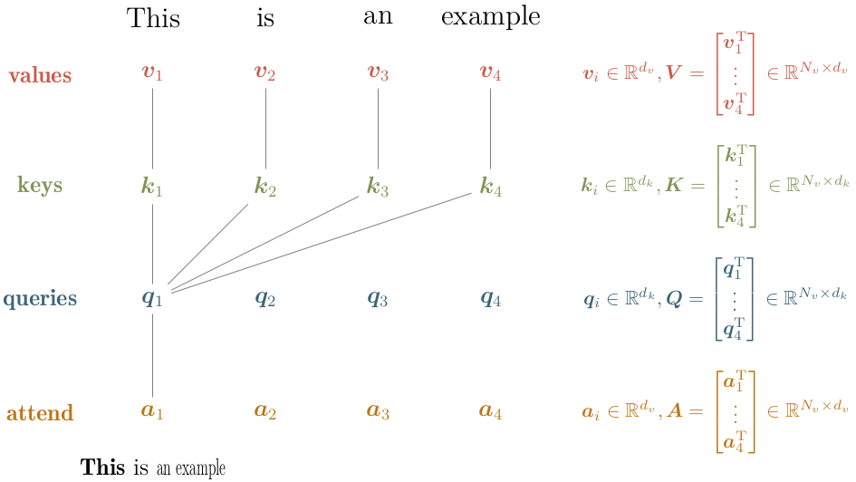
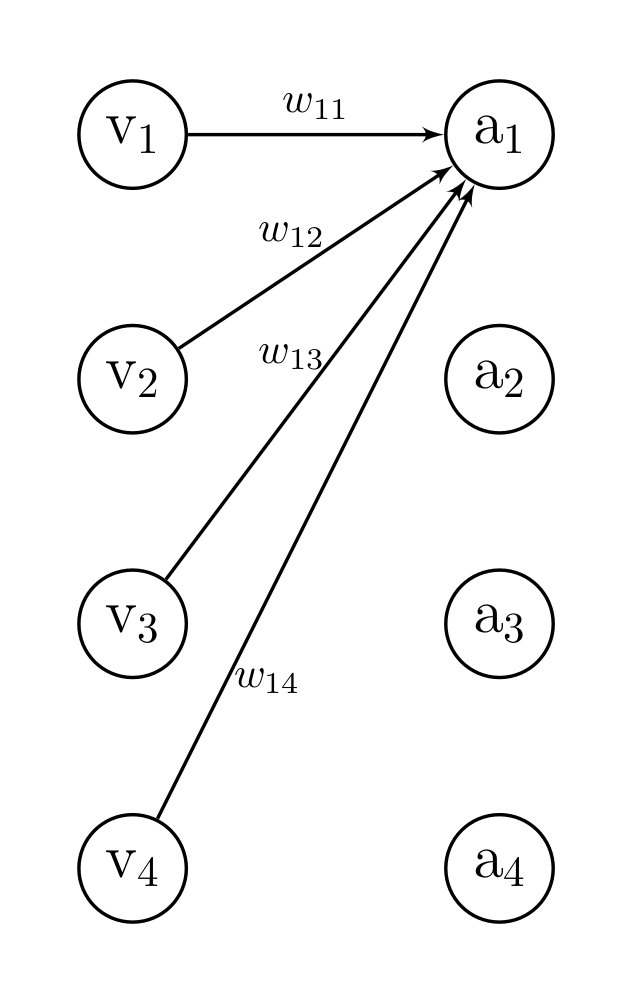
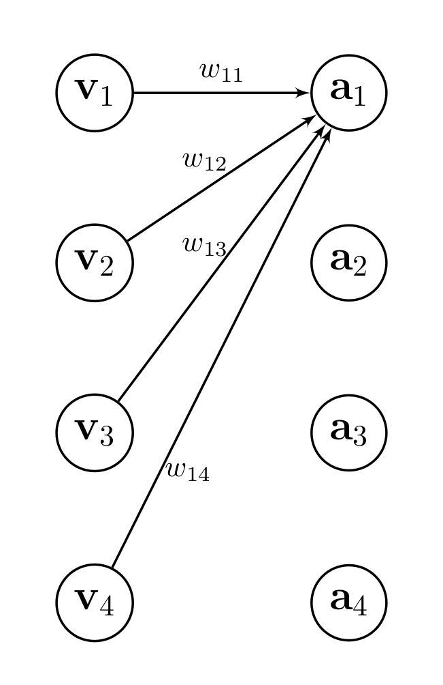

In essence, an attention mechanism can be intuitively understood as a means to assign individual importance (or rather attention) to each entity in a collection of entities (e.g., words in a sentence or pixels in an image) using some cues as input. Mathmatically, this translates into computing a weighted average over all entities. In the attention mechansim from the Attention is all you need, the attention weights are obtained from the attention cues.
More abstractly, the attention mechanism can be used to answer the following questions
- What entities (e.g., pixels or words) should we attend to or focus on?
- What entities (e.g., pixels or words) are relevant for the task at hand?
Vaswani et al. (2017) call their particular attention mechanism Scaled Dot-Product Attention. Therein, the collection of entities is termed values and the attention cues are termed queries and keys. Attention to particular values (entities) is obtained by computing the weighted average over all values (entities) in which the attention weights are obtained by combining the attention cues.
The attention cues (queries and keys) are vectors of length \(d_k\) defined per value and can be seen as representations of questions (queries) and facts (keys): E.g., we could imagine a query representing the question Are you a noun? and a corresponding key representing the facts Noun, positive connotation, important, female. The alignment between the attention cues is computed via the dot-product (hence the name), additionally the alignment scores are passed through a Softmax-layer to obtain normalized attention weights. Finally, these attention weights are used to compute the weighted average.
To speed things up, queries, keys and values are packed into matrices \(\textbf{Q}, \textbf{K} \in \mathbb{R}^{N_v \times d_k}\) and \(\textbf{V} \in \mathbb{R}^{N_v \times d_v}\), respectively. As a result, the concise formulation of Scaled Dot-Product Attention is given by
\[ \text{Attention}(\textbf{Q}, \textbf{K}, \textbf{V}) = \underbrace{\text{softmax} \left( %\overbrace{ \frac {\textbf{Q} \textbf{K}^{\text{T}}} {\sqrt{d_k}} %}^{\text{attention alignment } \textbf{L} \in } \right) }_{\text{attention weight }\textbf{W} \in \mathbb{R}^{N_v \times N_v}} \textbf{V} = \textbf{A} \]
in which \(\frac{1}{\sqrt{d_k}}\) is an additional scalar which Vaswani et al. (2017) added to counter vanishing gradients (they hypothesize that for a higher cue dimension \(d_k\) the dot-product might grow large in magnitude).
The figure below highlights how the corresponding vectors are packed into matrices and which vectors are used to obtain the first attention vector \(\textbf{a}_1\).
|  |
|---|
| Scaled Dot-Product Attention: Matrix Packing and Computation Schematic |
The result matrix \(\textbf{A}\) has the same dimensionality as \(\textbf{V}\) and in fact each entry \(\textbf{a}_i\) is basically a (normalized) linear combination of the vectors \(\{\textbf{v}_j\}_{j=1}^{N_v}\)
\[ \textbf{a}_i = \sum_j w_{ij} (\textbf{q}_i, \textbf{k}_j) \textbf{v}_j \quad \text{with} \quad \sum_j w_{ij} (\textbf{q}_i, \textbf{k}_j) = 1. \]
In this formulation, it is obvious that scaled-dot product attention means basically computing a weighted average over all entities. Furthermore, each attention vector \(\textbf{a}_i\) has a fixed query vector \(\textbf{q}_i\) which explains the name query.
The equation above looks surprisingly similar to a fully connected layer with no bias and same dimensionality between input \(\textbf{v}_i \in\mathbb{R}^N\) and output \(\textbf{a}_i \in \mathbb{R}^N\). In this case, we could describe the output of a fully connected layer as
\[ \text{a}_i = \sum_j w_{ij} \text{v}_j. \]
If we would pass the weight matrix \(\textbf{W} \in \mathbb{R}^{N\times N}\) through a softmax layer, we could even achieve the following
\[ \text{a}_i = \sum_j w_{ij} \text{v}_j \quad \text{with} \quad \sum_{j} w_{ij} = 1. \]
So what’s the difference between an attention and a fully connected layer?
In fact, the only difference is the value dimensionality \(d_v\), i.e., in case of \(d_v = 1\) there is no difference.
|  |  |
|---|---|
| Linear Layer | Attention Layer |